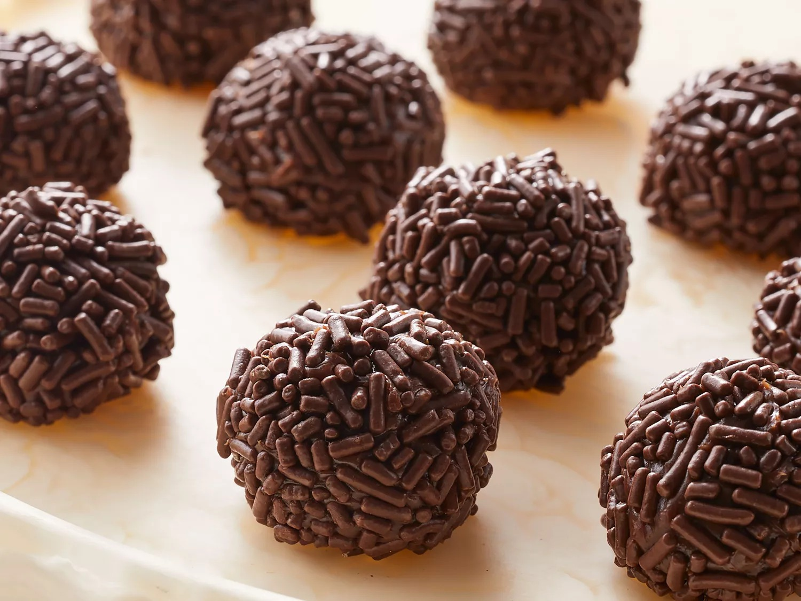

Home
Brigadeiro

Description
Brigadeiros are Brazilian chocolate truffles made out of only a handful of ingredients: sweetened condensed milk, butter, and any sort of flavoring. The most traditional one is the chocolate brigadeiro, and that’s what I will show you today!
It's a popular confection throughout the country, especially for festive events. A brigadeiro is generally shaped into small balls covered in chocolate sprinkles and placed in a small cupcake liner. The mixture may also be poured into a small container and eaten with a spoon; this is known as a brigadeiro de colher (literally, "spoon brigadeiro").
Ingredients
- 1 can of sweetened condensed milk (397 grams)
- 3 tbsp of chocolate powder
- 1 tbsp of butter
- 100 grams (3.5 oz) of chocolate sprinkles
- Candy cup dessert wraps (size #5)
Steps
- Mix the sweetened condnesed milk, the chocolate powder, and butter in a pan and place it over low heat for approx. 15-20 mins. Continuously stir until you can see the bottom of the pot for 2-3 seconds when dragging a spatula through.
- Pour onto a buttered plate and let it sit for approx. 3 hours.
- Shape and roll the room temperature mixture into balls and roll the balls in a plate full of the choclate sprinkles.
- Once the balls are covered with sprinles place them in the candy cup dessert wraps.